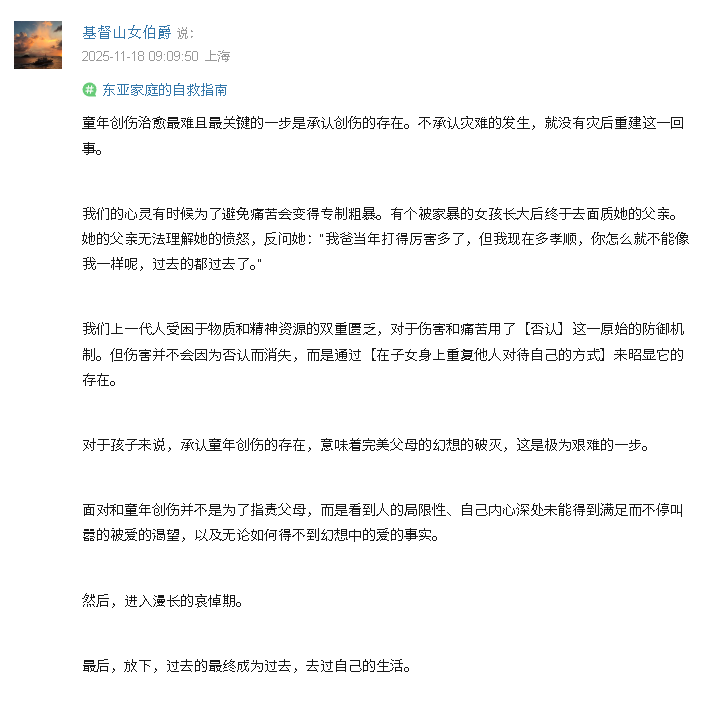

The Raven in the Rain🏳️🌈
@Raincandy_1937
RT @Gelm01: 童年创伤治愈最难且最关键的一步是承认创伤的存在。
“创伤”这种事和父母那辈人是很难沟通的，实际上和同龄人中的一些沟通也很难。似乎这些人理解不了除了“遗忘”以外，创伤还有其他的处理手段，更不会相信创伤是可以抚平的。 …

少年期の終り🏵✝️
@Gelm01
童年创伤治愈最难且最关键的一步是承认创伤的存在。
“创伤”这种事和父母那辈人是很难沟通的，实际上和同龄人中的一些沟通也很难。似乎这些人理解不了除了“遗忘”以外，创伤还有其他的处理手段，更不会相信创伤是可以抚平的。 https://t.co/3urHh6cCkw